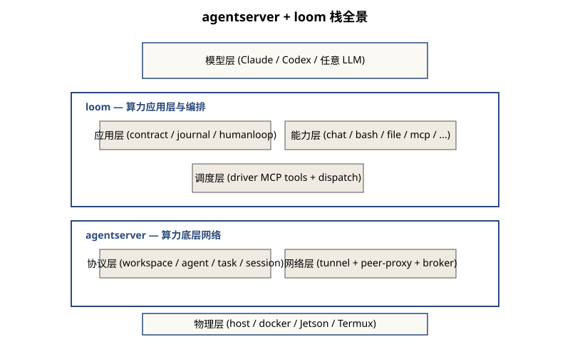

系统抽象:算力作为第三种被编码对象
今天调用算力的方式(写死 GPU 型号、写死区域、写死并发数、写死框架版本), 正是 1970 年前调用数据的方式:依赖约定、依赖文档、依赖人记得。 本栈做的事很简单:把这一层写死的"约定"变成机器强制的"接口"。
三次编码的历史类比
| 被编码对象 | 编码形态 | 新能力 | 由此带来的新世界 |
|---|---|---|---|
| 算法 | 程序(源码、字节码) | 调度、迁移、热更新、版本化 | 操作系统、多任务、跨平台 |
| 信息 | 数据(结构化/非结构化) | 查询、变换、复制、加密、流转 | 数据库、互联网、AI |
| 算力 | ? | ? | ? |
规律是清晰的:一个对象一旦被编码,就从"被使用的现场"变成"可被独立操作的对象", 新的产业和方法论随即出现。
Liskov 数据抽象在算力上的复现
1974 年 Liskov 与 Zilles[1]论证: "对象的行为完全由一组操作刻画,使用者无需知道表示。" 这一句话改写过数据访问的写法。同样的精神在算力上同样成立:
Liskov 还说了一句更狠的:"惯例无法替代强制约束。" 这正是本栈出现的理由——把"调用算力时写死的约定"变成"机器强制的接口"。
栈的两段定位
agentserver = 算力底层网络
解决四件事,缺一不可:
- 命名:算力被分配
agent_id与display_name;集群中可寻址。 - 隔离:每个 agent 在自己的 sandbox 里跑,文件、进程、网络都受限。
- 穿透:slave 在 NAT 后面也能被 driver 调用——靠反向 WS tunnel + peer-proxy。
- 身份:OAuth 2.0 Device Flow[3]给每个 agent 颁发 sandbox token + proxy token;调用即鉴权。
没有这一层,算力还是"哪台机、IP 多少、能不能 SSH 进去"的运维问题,不是工程问题。
loom = 算力应用层与编排
在 agentserver 之上,loom 把"算力的接口"再向上抬了一层:
- 能力命名:每个 slave 通过
AgentCard.skills公告自己有chat/bash/file/register_mcp等能力;driver 用inspect_capabilities发现。 - 能力组合:driver 用
TaskContract把多个 slave 的能力组合成一个任务的 DAG。 - 能力扩展:slave 缺能力时,driver 可以让 slave 在线 scaffold 一个新的 MCP server,过 acceptance gate,
register_mcp接入;下次任务可直接调。 - 能力中断:chat 中模型可以调
ask_user暂停;driver 把问题透给真人,真人回答后用resume_task续上 backend session。
没有这一层,agentserver 还只是一个"分布式 coding-agent 平台"——能远程跑 Claude, 但任务的形状、能力的命名、跨任务的能力沉淀都不存在。
合栈的承诺
两段栈合起来兑现的一句话承诺:用户可以把一段意图(自然语言)交给驱动方, 后者用集群中现有的、被命名的、随时可被扩展的算力把它执行了,中途可以介入, 执行的痕迹被记录,新增的能力被复用。
本栈不是另一个 multi-agent 框架;multi-agent 框架普遍假设单机 in-process。 本栈也不是另一个 coding-agent 平台;coding-agent 平台普遍假设 1:1 用户↔机器。 本栈把这两层合在一起做(见相关工作的对比表)。
三种视角入口
把"算力被编码"这个抽象命题拆成三个可工程化的视角,后续三页分别展开:
- Layer:水平 7 层堆叠 — 物理算力到模型层,每一层都对应"下一层不够"。
- Tier:角色分层 — driver / slave / observer 各扮演什么,如何同一段代码跨多 tier。
- Cycle:反馈循环 — 4 个时间维度的循环共享同一模式:失败 → 自修复 → 学习。
